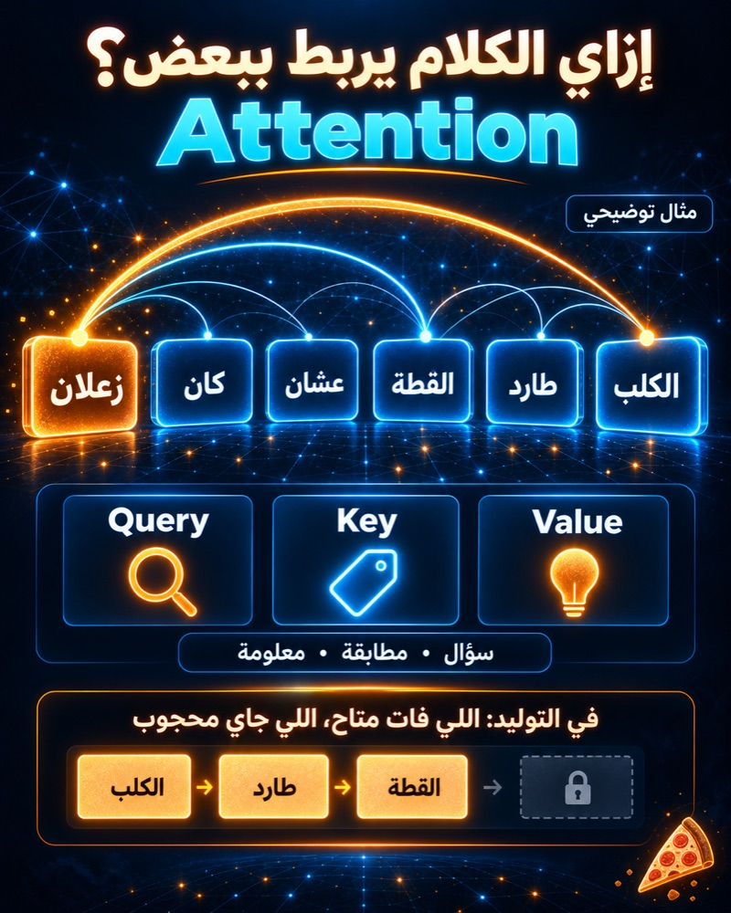

إزاي الـ AI بيقرر يركّز على إيه في الجملة؟
كل كلمة بتفهم نفسها بمعرفة اللي حواليها
في المقال اللي فات اتكلمنا إن كل كلمة بتتحول لـ Vector بيوصف معناها. لكن فيه مشكلة: نفس الكلمة ممكن يتغيّر دورها حسب الجملة اللي جايه فيها.
مثال: كلمة it في جملة "The cat didn't cross the street because it was tired" — مالهاش معنى لوحدها؛ لازم النموذج يفهم إنها بترجع لـ cat مش لـ street.
طب ده بيشتغل إزاي؟
كل كلمة بتعمل 3 حاجات: Query (سؤال: أنا بدوّر على إيه؟)، Key (إجابة مختصرة: أنا عندي إيه؟)، Value (المحتوى الفعلي بتاعها).
النموذج بيقارن الـ Query بتاع كل كلمة مع الـ Key بتاع كل الكلمات التانية، يطلع منها درجات تشابه (Attention Scores)، وبعدين بيجمع الـ Values موزونة بالدرجات دي. النتيجة: تمثيل جديد للكلمة، مبني على السياق اللي هي فيه — مش بس معناها المعزول.
مثال حقيقي: في جملة "The cat didn't cross the street because it was tired"، كلمة "it" فعلًا بتاخد أعلى وزن انتباه ناحية "cat" — جرّب بنفسك في الديمو تحت.
مش رأس واحد بس (Multi-Head Attention)
النموذج بيعمل العملية دي كذا مرة بالتوازي، كل مرة اسمها Head. كل Head ممكن يركّز على نوع علاقة مختلف — شوية بيمسكوا القواعد، شوية بيمسكوا المرجعية (زي مين "it" بترجعله)، شوية بيمسكوا المعنى العام.
فرق مهم عن الـ Embeddings
الـ Embeddings بتديك تمثيل شبه ثابت للكلمة. أما الـ Attention Weights فبتتحسب من جديد لكل جملة تكتبها — نفس الكلمة ممكن يبقى ليها نمط انتباه مختلف تمامًا حسب اللي حواليها.
طب وقت التوليد (Generation)؟
الديمو تحت بيوضح نوع Attention اسمه Bidirectional (زي BERT): كل كلمة تقدر تبص على كل الكلمات التانية، قبلها وبعدها. لكن لما GPT أو Claude بيولّدوا كلام كلمة كلمة، الوضع مختلف: كل كلمة جديدة تقدر تبص بس على الكلام اللي فات، مش اللي لسه هيجي — لأن اللي هيجي أصلًا لسه مش موجود.
النوع ده اسمه Causal (Masked) Attention: النموذج بيحجب أي كلمة قدّام الكلمة الحالية وقت الحساب. عشان كده الـ Transformers بتتقسم لنوعين: Encoders (Bidirectional، زي BERT وMiniLM اللي بنستخدمه في الديمو) وDecoders (Causal، زي GPT).
طب ده بيتستخدم فين؟
الـ Attention هي جوهر الـ Transformer — المعمارية اللي بُنيت عليها GPT وClaude وكل نماذج اللغة الحديثة (من ورقة بحثية اسمها "Attention Is All You Need"، 2017).
كل ما الجملة (أو الـ Context Window) تطول، عدد المقارنات اللي لازم النموذج يعملها بيكبر بسرعة (تربيعيًا) — عشان كده الـ Context الطويل مكلف حسابيًا.
في الـ RAG، لما النموذج "يدوّر" في مستنداتك، هو فعليًا بيعمل Attention بين سؤالك والمستندات المسترجَعة.
ملحوظة مهمة (أمانة علمية)
نموذج صغير زي اللي في الديمو تحت مش دايمًا بيدّي نمط انتباه بديهي 100%. أحيانًا بيمسك العلاقة المتوقعة (زي "it" اللي بترجع لـ"cat" في المثال فوق)، وأحيانًا الأنماط بتكون أعقد من كده. دي حاجة باحثين الـ NLP لسه بيناقشوها — إن الانتباه مش دايمًا = تفسير كامل لقرار النموذج.
الخلاصة
الـ Attention هي اللي بتخلي كل كلمة تفهم نفسها في سياق الجملة، مش لوحدها. من غيرها، مكانش هيبقى فيه Transformers ولا GPT ولا Claude زي ما احنا عارفينهم.
#EKOAI